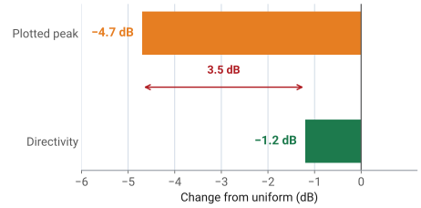

L22–L23 Lab — Tapering, Squint, and Quantization#
Tapering, Squint, and Quantization
Lesson 22’s taper table and Lesson 23’s three departures go to the bench.
L22–L23 Lab · Antennas, Phased Arrays, and Radar Systems · Dr. Neil Rogers
Printing
To print the slides, switch to present mode and print: one slide a sheet, with room for notes. Print from read mode for the whole lesson.
Learning Objectives
- I can apply amplitude tapering (uniform, cosine, Chebyshev, Taylor) to control sidelobe level and predict the pattern trade-off.
- I can identify beam squint and quantization effects in a phased array and describe their impact on system performance.
Lesson 22 ended with a table of what each taper family does: sidelobes come down, the beam broadens, and the aperture gives up some efficiency. Today that table goes to the bench. You will load each preset on the PHASER, sweep the beam past the HB100, and check the measured beamwidth and peak level against the numbers you predicted. The measurement also forces a distinction that is easy to lose on paper — the peak drop you watch happen on the plot is not the directivity loss the array suffers, and the gap between them is several decibels.
Part 2 keeps the kit on the bench for the three departures Lesson 23 derived and no taper can fix: grating lobes, beam squint, and phase quantization. You measure each one against the number that lesson gave you for it.
What Lesson 22 Predicts
Preset |
HPBW |
Peak drop |
\(\eta_t\) |
|---|---|---|---|
Uniform |
\(13.1^\circ\) |
0 dB |
0 dB |
Hann |
\(18.9^\circ\) |
\(-4.7\) dB |
\(-1.2\) dB |
Blackman |
\(21.4^\circ\) |
\(-6.1\) dB |
\(-1.8\) dB |
Chebyshev |
\(22.6^\circ\) |
\(-6.5\) dB |
\(-2.1\) dB |
The expectation table is the prediction column for every Part 1 measurement. The GUI writes these amplitudes to the eight Element Gains sliders when you press a preset button; everything else is what the sweep reads relative to a uniform-taper reference. The beamwidths are the array factor’s at \(10.443\ \text{GHz}\), the frequency of the phaser-00 test run; repeat them at your own kit’s Find HB100 frequency in the packet’s Part 1.
Preset |
\(a_n\) (%) |
|---|---|
Uniform |
100 × 8 |
Hann |
12, 43, 77, 100, 100, 77, 43, 12 |
Blackman |
6, 27, 66, 100, 100, 66, 27, 6 |
Chebyshev |
4, 23, 62, 100, 100, 62, 23, 4 |
The predictions assume each slider is linear in voltage, which the Phaser software provides once the kit has the gain-slider fix. On an older install the slider follows the ADAR1000’s register curve, about \((\%/100)^{0.68}\) in voltage, and every taper comes out milder: the phaser-00 test run read Hann at \(17.2^\circ\) and \(-3.7\) dB against \(18.9^\circ\) and \(-4.7\) dB predicted.
Two Numbers: Peak Drop and Taper Efficiency
Hann: the plot falls \(4.7\) dB; directivity falls \(1.2\) dB.
Record both, in separate columns.
The peak drop is the coherent receive-voltage loss: at broadside the eight element signals add in phase, so the summed voltage is proportional to \(\sum a_n\) instead of \(N\), and the plotted peak falls by \(20\log_{10}(\sum a_n / N)\). That is the number the Rectangular plot shows you. The directivity loss is the taper efficiency, which for the Hann preset is \(-1.2\) dB, not \(-4.7\) dB. Both numbers are real and both belong in your table, so record them in separate columns and never let one stand in for the other. The worked Hann numbers after the bench steps show where the difference comes from.
The Floor Sets What You Can Report
Tapered sidelobes sit below the sweep’s floor: write “below the floor” and its level.
We first estimated the floor at \(-23\) dBc.
Phaser-00 read floors from \(-17\) to \(-31\) dBc, setup to setup.
One measurement will refuse to give you a number. Every tapered preset pushes its first sidelobe below the floor of the sweep, so the correct table entry in those rows is “below the floor”, with the floor’s level beside it, not a value read off the grass. Quoting \(-27\) dBc from a trace whose floor is at \(-23\) dBc reports the noise, not the antenna.
The floor itself is not one fixed number. We first estimated it at about \(23\) dB under the uniform-taper peak. The phaser-00 test run read floors from \(-17\) to \(-31\) dBc on the same kit, depending on the setup, and a wall beside the kit raised a false lobe to \(-9\) dBc. Read your own floor before you record anything, and write it at the top of Part 2.
The Measured Sweep for Each Preset
The widget below runs the same sweep in the browser. Start on Uniform and note the first sidelobe near \(-13\) dBc, then step through the presets and watch two things happen at once: the main lobe widens and its peak drops, while the sidelobes sink into the grass. The \(\eta_t\) pill is the directivity loss, so compare it against the peak drop pill each time — the two never agree.
Grating Lobes on the Bench
Every third element on, \(42\) mm: lobes at \(\pm 43.2^\circ\), peak \(-8.5\) dB.
Every fourth, \(56\) mm: lobes at \(\pm 30.9^\circ\), peak \(-12.0\) dB.
Phaser-00: \(-43.6^\circ\) and \(+42.3^\circ\); \(-33.0^\circ\) and \(+29.8^\circ\).
Part 1 measured the defect a taper can fix. Lesson 23 derived the three that it cannot: grating lobes, beam squint, and phase quantization. Part 2 measures all three on the same kit, each the same way as Part 1: predict, sweep, record. The predictions above are at \(10.443\ \text{GHz}\); work yours at your kit’s own frequency.
The peak drops on hardware run about \(1\) dB short of the element count (\(-7.8\) and \(-10.9\) dB on phaser-00), even with elements fully on or off. That shortfall also shows up when the whole array is compared with its single elements, and its cause is still open, so this step is graded on the lobe angles.
Squint on the Bench
Signal BW \(500\) MHz: the GUI sets the phases \(500\) MHz below the signal.
Source at \(45^\circ\): the sweep finds it at \(48.0^\circ\), a \(+3.0^\circ\) shift.
Phaser-00, source at \(41.1^\circ\): \(+2.5^\circ\) measured, \(+2.6^\circ\) predicted.
Lab preset 5 sets Signal BW to \(500\ \text{MHz}\), which tells the GUI to compute the steering phases for a frequency \(500\ \text{MHz}\) below the Signal Freq and receive at the Signal Freq. That is what a signal at the edge of a \(500\ \text{MHz}\) band sees. The same phases are a slightly different steer at the real frequency, so the whole beam moves and the sweep has to command a larger angle to land on the source. Signal BW resets to 0 after Calibrate, Find HB100, and the Rect preset, so check it before every squint sweep.
Quantization: Hold the Beam, Walk the Source
Preset 6: beam held at \(15^\circ\), Blackman taper, Signal vs Time.
A \(15^\circ\) ramp steps \(45.4^\circ\): almost on the 3- and 4-bit grids.
So 7, 4, and 3 bits should match; 2 bits puts a lobe near \(-51^\circ\).
Lab preset 6 holds the beam at \(15^\circ\) with the Blackman taper, so every true sidelobe is below the floor and anything that appears is the phase shifter’s doing. You walk the HB100 across the arc and read the level against time, at 7, 4, 3, and 2 bits. Lesson 23’s widget shows why the answer depends on the angle: a \(15^\circ\) ramp steps \(45.4^\circ\) per element, which rounds to the \(22.5^\circ\) and \(45^\circ\) grids with errors of \(3^\circ\) or less, while at 2 bits every other element is off by about \(44^\circ\) and the array factor puts a lobe near \(-51^\circ\) at about \(-8\) dBc. The walk with the beam held is new with this preset and has not yet been run on hardware. If lobes appear at 3 or 4 bits anyway, the kit is rounding more than the steering ramp; record what you see.
Bench Rules
Open Lab Presets before you press one; Calibrate, then Find HB100.
Set Rx Gain for an FFT peak of \(-10 \pm 3\) dBFS.
Source \(1.2\) m out, at patch height; facing the patches, E1 is on the right.
The rules come from the Module 3 dry runs. A peak near \(-10\) dBFS keeps the receiver linear with room above the floor. Every prediction uses the frequency Find HB100 reports for your kit, not the nominal \(10.525\ \text{GHz}\). Level comparisons need the source at \(1.2\) m or more: closer in, the residual curvature across the aperture and the reflections from the bench put errors of a few tenths of a decibel on every peak drop, which is the size of the effects you are measuring.
Keep the Bench Clear
Keep \(\pm 40^\circ\) of the bench clear: a wall made a false lobe at \(-9\) dBc.
If the uniform sidelobes are lopsided, recalibrate before going on.
In the phaser-00 test run, a wall beside the kit produced a lobe at \(-37^\circ\) to \(-41^\circ\), only \(9\) dB below the peak; in open space the same direction fell to the floor near \(-17\) dBc. A person seated beside the kit left a \(-17\) dBc shelf on that side. A stale calibration made the uniform trace’s two first sidelobes read unequal, and recalibrating fixed it.
Equipment and Setup
You need the ADALM-PHASER kit with its Raspberry Pi and Pluto attached, the HB100 source and its battery, a laptop on the same network, and a \(1.2\) m arc taped on the bench with marks every \(15^\circ\).
Place the HB100 at boresight, \(1.2\) m from the array face, at patch-row height and aimed at the center of the patch row. Leave it there for all of Part 1: every number there is a comparison between tapers, so the source must not move. Keep \(\pm 40^\circ\) of the bench clear of walls and people.
Power the PHASER, wait for the Pi to boot, and open
http://phaser.local:8080in a browser.In the sidebar, press Calibrate under Configuration and let it finish. An uncalibrated array carries element-to-element gain and phase errors that look exactly like a taper you did not ask for. Then press Find HB100 and record the Signal Freq it reports.
Set Rx Gain so the FFT peak, beam at \(0^\circ\) and source at boresight, reads \(-10 \pm 3\) dBFS. Leave it there for the whole lab.
Open the Lab Presets section, then press 3 Tapering. This loads the Configuration values for the HB100 and selects the Rectangular plot tab.
Under Element Gains, confirm Enforce Symmetric Taper is on. With it on, moving one slider moves its mirror-image partner, which is what you want for every taper in this lab.
No Hardware?
Note
Run the backend in simulation mode with
python phaser_headless.py --sim and open the same URL. The simulator places
a target at boresight, which is where Part 1 needs it, so every Part 1 step
and step (f) work unchanged. Steps (g) and (h) need a source that moves, so
they have no simulator equivalent; use the expectation tables.
Step (a): The Uniform Reference
Press the Uniform taper preset, confirm all eight sliders read 100%, and press Start. Read Peak Gain and Angle (set to Peak), then press Freeze to hold this trace. It stays on the plot as your reference for the rest of the lab, and every peak drop you record is measured against it.
Record the uniform HPBW by reading the angles where the trace falls 3 dB below its own peak. Expect about \(13^\circ\), within a degree of the \(13.1^\circ\) prediction — the sweep steps in \(2.8125^\circ\) increments, so the 3 dB crossings land between samples. Read the floor, too, and write it at the top of Part 2. If the two first sidelobes, near \(\pm 22^\circ\), differ by more than about 2 dB, recalibrate and repeat this step.
Step (b): Hann
Press the Hann preset. Before sweeping, do three things:
Read the eight slider values and copy them into your table. They should read 12, 43, 77, 100, 100, 77, 43, 12.
Compute \(\sum a_n\) and predict the peak drop from \(20\log_{10}(\sum a_n/N)\).
Write down the predicted HPBW, \(18.9^\circ\) at \(10.443\ \text{GHz}\), or your own from Part 1.
Now press Start. The main lobe should widen from about \(13^\circ\) to about \(19^\circ\), the peak should sit about 4.7 dB below the frozen uniform trace, and the first sidelobes that were plainly visible at \(\pm 22^\circ\) should be gone into the floor. On an older install expect a milder result, near \(17^\circ\) and \(-3.7\) dB. Record the peak drop, the HPBW, and “below the floor” for the sidelobe level.
Step (c): Blackman and Chebyshev
Repeat step (b) for the Blackman and Chebyshev presets, predicting before each sweep. These two tapers pull the end elements down to 6% and 4%, so most of the array’s outer aperture is barely contributing: the beam widens past \(21^\circ\) and the peak drops past 6 dB, for sidelobes that were already invisible after Hann. This is the point of diminishing returns that Lesson 22 described: a further \(2.5^\circ\) to \(3.7^\circ\) of beamwidth, with no sidelobe improvement this measurement can see.
Step (d): Design Your Own Taper
With Enforce Symmetric Taper still on, design a taper of your own against this specification:
HPBW no wider than \(17^\circ\), with the first sidelobe below \(-20\) dBc.
Start from Uniform and pull the two end elements down together, leaving the middle elements high. Put the end elements near 25% to 30% and step the elements between them smoothly up to 100%: 30, 55, 90, 100 is a good start. Work by iteration — set the sliders, press Start, read the HPBW and the sidelobe level, and adjust. Two or three passes will get you there.
With a linear slider, 30, 55, 90, 100 predicts \(16.5^\circ\) of beamwidth, a peak drop of \(-3.3\) dB, and a first sidelobe at \(-25\) dBc. On an older install the phaser-00 test run’s 25, 50, 90, 100 read \(16.2^\circ\), \(-2.8\) dB, and \(-23\) dBc, while end elements at 45% gave \(-18\) dBc and missed the specification. Record your final eight gain values and the measured result in the packet.
Step (e): Restore
Press the Uniform preset before you move on, so Part 2 starts from a known state.
Step (f): Grating Lobes
Leave the source at boresight. With the Uniform preset loaded, check that the frozen uniform trace from step (a) is still on the plot; if it is not, press Start and Freeze again, because it is the reference every peak drop below is read against.
Turn Enforce Symmetric Taper off (the gain lists below are not symmetric) and press Lab preset 4 Grating Lobes. It leaves Rx1, Rx4, and Rx7 at 100% and the other five at 0%, so the three active elements sit \(3d = 42\ \text{mm}\) apart. Press Start. Expect three lobes of the same height: the main lobe at \(0^\circ\) and two copies near \(\pm 43^\circ\). Read their angles, their heights against the \(0^\circ\) lobe, and the peak drop against the frozen uniform trace.
Now set Rx4 and Rx7 to 0% and Rx5 to 100%, so only Rx1 and Rx5 are on and \(d_\text{eff} = 4d = 56\ \text{mm}\). Sweep again. Expect lobes near \(\pm 31^\circ\), and the trace climbing to full height at both ends of the plot: the \(m = 2\) solution needs \(\sin\theta\) just past 1, so you see its shoulder rather than its peak.
Elements on |
\(d_\text{eff}\) |
Lobes at 10.443 GHz |
Phaser-00 |
Peak drop |
|---|---|---|---|---|
Rx1, Rx4, Rx7 |
42 mm |
\(\pm 43.2^\circ\) |
\(-43.6^\circ\), \(+42.3^\circ\) |
\(-8.5\) dB predicted, \(-7.8\) measured |
Rx1, Rx5 |
56 mm |
\(\pm 30.9^\circ\), both ends |
\(-33.0^\circ\), \(+29.8^\circ\) |
\(-12.0\) dB predicted, \(-10.9\) measured |
Step (g): Beam Squint
Move the HB100 to \(45^\circ\) on the \(1.2\) m arc and press Uniform. Set Signal BW to 10 MHz, press Start, read Angle (set to Peak; it should report the source, about \(45^\circ\)), and press Freeze. Then press Lab preset 5 Beam Squint, check that Signal BW reads 500 MHz (Calibrate, Find HB100, and the Rect preset all reset it to 0), and sweep again. The peak moves even though the source did not.
A beam commanded to \(\theta_c\) with its phases set at \(f_0\) points at \(\sin^{-1}[(f_0/f)\sin\theta_c]\) when the signal is at \(f\). With \(f = 10.443\) GHz and \(f_0 = 9.943\) GHz, the sweep lands on a source at \(45^\circ\) only when it commands \(48.0^\circ\).
Signal BW |
Angle (Peak) |
Shift, calculated |
Shift, measured |
|---|---|---|---|
10 MHz |
\(\approx 45^\circ\) |
\(0.05^\circ\) |
reference |
500 MHz |
\(\approx 48^\circ\) |
\(+3.0^\circ\) |
\(+2.5\) to \(+3.5^\circ\) |
Step (h): Phase Quantization
Put the HB100 back at the arc’s \(-90^\circ\) end and press Lab preset 6 Quantization. It holds the beam at \(15^\circ\) with the Blackman taper and opens Signal vs Time on the Tracking tab. At Phase Shift Bits 7, walk the HB100 from \(-90^\circ\) to \(+90^\circ\) along the \(1.2\) m arc, aimed at the array, in about 10 s, and read the main-lobe peak and the strongest lobe outside the main lobe on the trace. Repeat at 4, 3, and 2 bits.
Bits |
LSB |
Rule of thumb, \(-6B\) dB |
Expected strongest lobe outside the main lobe |
|---|---|---|---|
7 |
\(2.8^\circ\) |
\(-42\) |
the floor |
4 |
\(22.5^\circ\) |
\(-24\) |
the floor, as at 7 bits |
3 |
\(45^\circ\) |
\(-18\) |
the floor, as at 7 bits |
2 |
\(90^\circ\) |
\(-12\) |
about \(-8\) dBc, near \(-50^\circ\) |
The expectations come from rounding a \(15^\circ\) ramp onto each grid; the walk has not yet been run on hardware. The earlier version of this step swept the beam with the bits reduced and read \(-15.5\), \(-12.0\), and \(-8.5\) dBc at 4, 3, and 2 bits, above both the rule and Lesson 23’s worst-case simulation. Lobes at 3 or 4 bits in the walk would point to the kit rounding more than the steering ramp.
Step (i): Restore
Before you leave: Use Bits on, Phase Shift Bits 7, Signal BW 10 MHz, and the Uniform preset.
Working the Hann Numbers
Work the Hann preset all the way through. The eight amplitudes are \(a_n = 0.12,\ 0.43,\ 0.77,\ 1.00,\ 1.00,\ 0.77,\ 0.43,\ 0.12\), giving
The plotted peak drop follows from the first sum alone:
The directivity loss follows from both sums:

So the trace drops 4.7 dB and the antenna loses 1.2 dB of directivity. The remaining 3.5 dB did not go anywhere, because it was never a loss. The sweep plots received power normalized to full scale, and the tapered array collects less signal voltage from the source — that part is real and it is the 4.7 dB. But the tapered array also responds to less of everything else arriving from off-boresight, and the noise-equivalent aperture shrinks along with the signal sum. Directivity is the ratio of on-axis intensity to the average over all angles, and that ratio only falls by \(\eta_t\). If you re-normalized each trace to its own peak instead of to the uniform peak, the 4.7 dB would vanish from the plot entirely and the beam shape would be unchanged.
The practical statement is short. The peak drop is a plot artifact of a common reference; the taper efficiency is the antenna’s actual loss. A system budget that debits 4.7 dB for the taper overstates the loss by a factor of two in power.
Lab Packet
The packet is the turn-in document for the whole lab: Part 1 before the period, Part 2 at the bench, Part 3 after. L22–L23 Lab packet (PDF).
Summary: Tapering
Symbol / idea |
What it is |
Number to remember |
|---|---|---|
\(\sum a_n / N\) |
coherent receive-voltage fraction at broadside |
Hann: \(4.64/8 \rightarrow -4.7\) dB |
\(\eta_t = (\sum a_n)^2/(N\sum a_n^2)\) |
taper efficiency — the directivity the array loses |
Hann: 0.75, or \(-1.2\) dB |
HPBW with taper |
broadens as the aperture is de-weighted |
\(13.1^\circ\) uniform, \(18.9^\circ\) Hann, \(22.6^\circ\) Chebyshev |
Floor |
the limit on any sidelobe reading |
\(-17\) to \(-31\) dBc on phaser-00; tapered sidelobes sit below it |
Mild taper |
most of the sidelobe benefit, little directivity lost |
ends at 30%: \(16.5^\circ\), \(-0.7\) dB of \(\eta_t\) |
Summary: The Three Departures
Symbol / idea |
What it is |
Number to remember |
|---|---|---|
Grating lobe |
a full-height copy of the beam where \(\sin\theta = m\lambda/d_\text{eff}\) is real |
every third element on: \(\pm 43^\circ\) |
Beam squint |
the beam moves when the signal is off the phase-set frequency |
500 MHz at \(45^\circ\): \(3^\circ\) |
Phase quantization |
lobes that appear when the ramp falls between grid points |
2 bits at \(15^\circ\): a lobe near \(-8\) dBc |
Looking Ahead
Turn in the packet, all three parts, before Lesson 24.
L24 places a null on purpose; phaser-00 measured nulls \(-40\) to \(-50\) dB deep.
Part 1 measured the defect a taper can fix: the sidelobes came down, and the beam widened, with a peak drop that is not the directivity you lost. Part 2 measured the three it cannot. Grating lobes are the array factor doing exactly what the geometry tells it to, squint is what setting the phases at one frequency and receiving at another does to the beam, and quantization lobes appear when the steering ramp falls between the shifter’s grid points. Lesson 24 turns from pattern defects to pattern control: placing a null at a chosen angle on purpose, with weights that change both amplitude and phase.